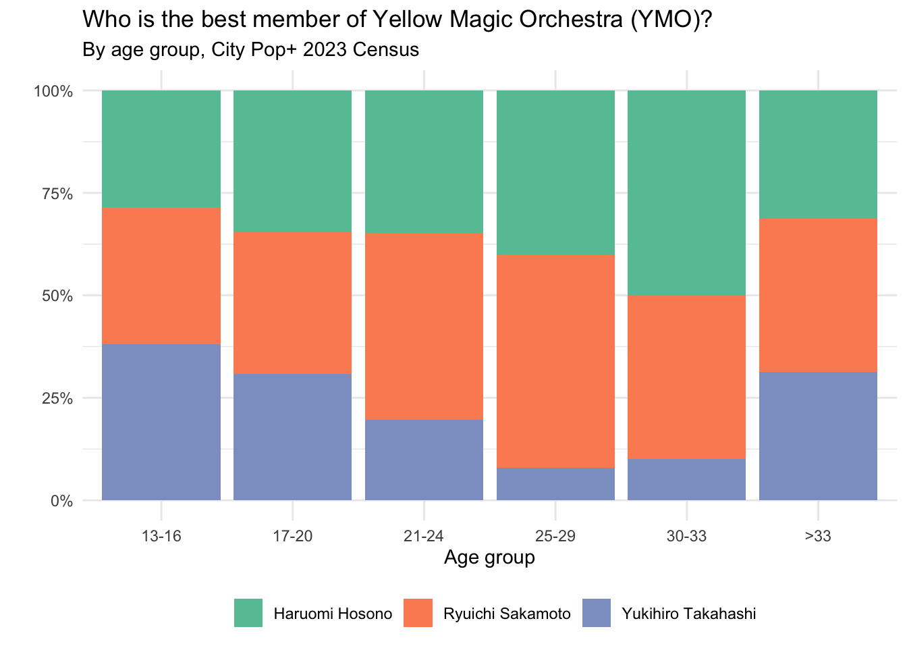
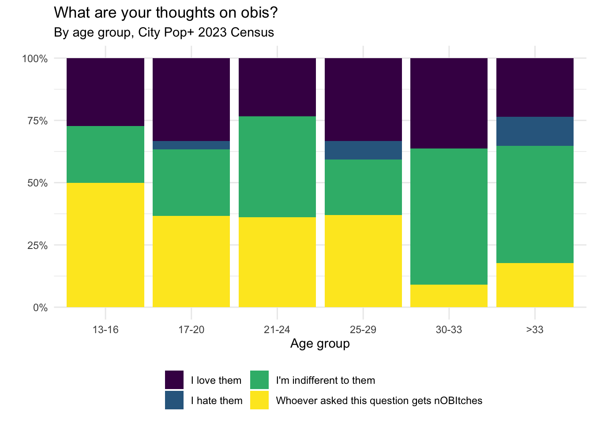
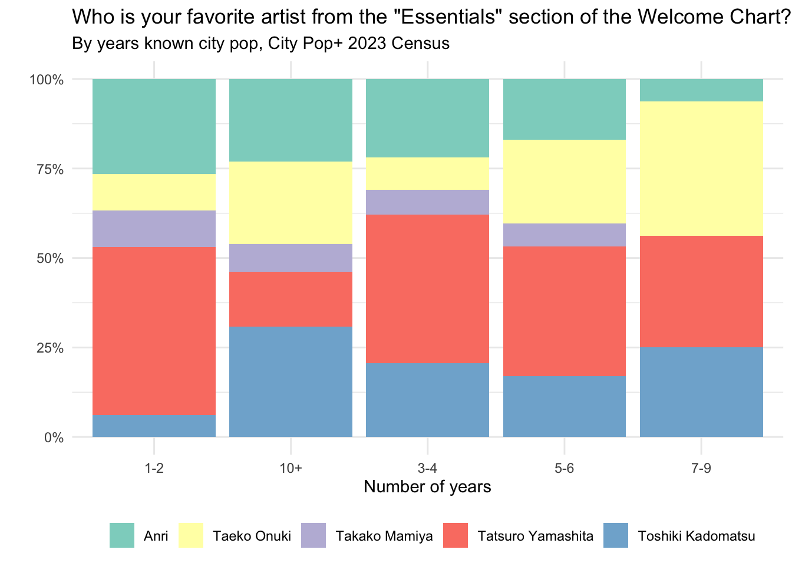
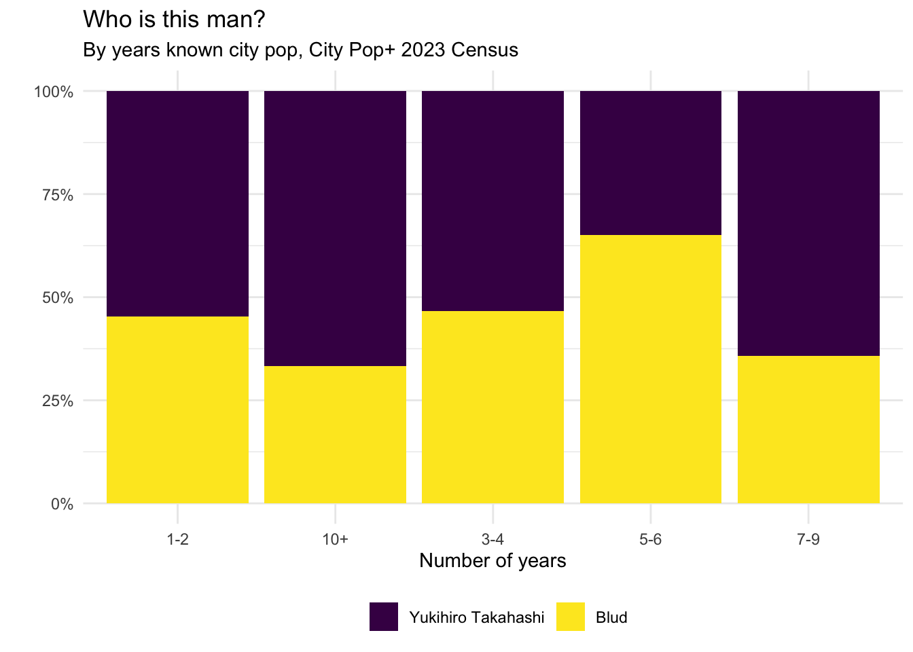

Bivariates, regressions, etc
Under construction
Age group comparisons
Interaction with city pop
Where discovered city pop
Graph
Table
| age | know_first | n | percent |
|---|---|---|---|
| 13-16 | YouTube recommendations | 21 | 80.8% |
| 13-16 | TikTok | 5 | 19.2% |
| 13-16 | Heard it in a TV show/anime/movie | 4 | 15.4% |
| 13-16 | Heard it in a mix | 4 | 15.4% |
| 13-16 | Heard it in a meme/referenced in a meme | 7 | 26.9% |
| 13-16 | Through samples in mainstream music | 1 | 3.8% |
| 13-16 | Through vaporwave/future funk | 8 | 30.8% |
| 13-16 | Discogs/RYM/other digging sites | 4 | 15.4% |
| 13-16 | Recommended by a friend/someone else | 7 | 26.9% |
| 13-16 | Grew up listening to it | 1 | 3.8% |
| 13-16 | Other | 1 | 3.8% |
| 17-20 | YouTube recommendations | 56 | 75.7% |
| 17-20 | TikTok | 7 | 9.5% |
| 17-20 | Heard it in a TV show/anime/movie | 6 | 8.1% |
| 17-20 | Heard it in a mix | 11 | 14.9% |
| 17-20 | Heard it in a meme/referenced in a meme | 10 | 13.5% |
| 17-20 | Through vaporwave/future funk | 20 | 27% |
| 17-20 | Discogs/RYM/other digging sites | 4 | 5.4% |
| 17-20 | Recommended by a friend/someone else | 9 | 12.2% |
| 17-20 | Grew up listening to it | 2 | 2.7% |
| 17-20 | Other | 1 | 1.4% |
| 17-20 | Other | 1 | 1.4% |
| 17-20 | Other | 1 | 1.4% |
| 17-20 | Other | 1 | 1.4% |
| 17-20 | Other | 1 | 1.4% |
| 17-20 | Other | 1 | 1.4% |
| 21-24 | YouTube recommendations | 38 | 70.4% |
| 21-24 | Heard it in a TV show/anime/movie | 9 | 16.7% |
| 21-24 | Heard it in a mix | 13 | 24.1% |
| 21-24 | Heard it in a meme/referenced in a meme | 8 | 14.8% |
| 21-24 | Through samples in mainstream music | 6 | 11.1% |
| 21-24 | Through vaporwave/future funk | 23 | 42.6% |
| 21-24 | Discogs/RYM/other digging sites | 6 | 11.1% |
| 21-24 | Digging in a record store | 2 | 3.7% |
| 21-24 | Recommended by a friend/someone else | 9 | 16.7% |
| 21-24 | Grew up listening to it | 2 | 3.7% |
| 21-24 | Other | 1 | 1.9% |
| 21-24 | Other | 1 | 1.9% |
| 21-24 | Other | 1 | 1.9% |
| 21-24 | Other | 1 | 1.9% |
| 21-24 | Other | 1 | 1.9% |
| 21-24 | Other | 1 | 1.9% |
| 21-24 | Other | 1 | 1.9% |
| 21-24 | Other | 1 | 1.9% |
| 25-29 | YouTube recommendations | 16 | 55.2% |
| 25-29 | Heard it in a TV show/anime/movie | 2 | 6.9% |
| 25-29 | Heard it in a mix | 2 | 6.9% |
| 25-29 | Heard it in a meme/referenced in a meme | 1 | 3.4% |
| 25-29 | Through vaporwave/future funk | 9 | 31% |
| 25-29 | Discogs/RYM/other digging sites | 7 | 24.1% |
| 25-29 | Digging in a record store | 1 | 3.4% |
| 25-29 | Recommended by a friend/someone else | 8 | 27.6% |
| 25-29 | Other | 1 | 3.4% |
| 30-33 | YouTube recommendations | 9 | 69.2% |
| 30-33 | Heard it in a TV show/anime/movie | 6 | 46.2% |
| 30-33 | Heard it in a mix | 3 | 23.1% |
| 30-33 | Through samples in mainstream music | 2 | 15.4% |
| 30-33 | Through vaporwave/future funk | 5 | 38.5% |
| 30-33 | Discogs/RYM/other digging sites | 2 | 15.4% |
| 30-33 | Recommended by a friend/someone else | 2 | 15.4% |
| 30-33 | Grew up listening to it | 2 | 15.4% |
| >33 | YouTube recommendations | 8 | 42.1% |
| >33 | TikTok | 1 | 5.3% |
| >33 | Heard it in a TV show/anime/movie | 4 | 21.1% |
| >33 | Heard it in a mix | 3 | 15.8% |
| >33 | Through samples in mainstream music | 1 | 5.3% |
| >33 | Through vaporwave/future funk | 4 | 21.1% |
| >33 | Discogs/RYM/other digging sites | 2 | 10.5% |
| >33 | Digging in a record store | 2 | 10.5% |
| >33 | Recommended by a friend/someone else | 5 | 26.3% |
| >33 | Grew up listening to it | 1 | 5.3% |
| >33 | Other | 1 | 5.3% |
| >33 | Other | 1 | 5.3% |
| >33 | Other | 1 | 5.3% |
Where one listens to city pop
Graph

Table
| age | listen_where | n | percent |
|---|---|---|---|
| 13-16 | Streaming services | 20 | 76.9% |
| 13-16 | Video sites | 19 | 73.1% |
| 13-16 | Physical media | 7 | 26.9% |
| 13-16 | JPOP80SS | 10 | 38.5% |
| 13-16 | Soulseek | 7 | 26.9% |
| 13-16 | Torr- [redacted] | 7 | 26.9% |
| 13-16 | Mix/Web radio | 3 | 11.5% |
| 13-16 | Purchased digital files | 1 | 3.8% |
| 17-20 | Streaming services | 60 | 81.1% |
| 17-20 | Video sites | 59 | 79.7% |
| 17-20 | Physical media | 30 | 40.5% |
| 17-20 | JPOP80SS | 30 | 40.5% |
| 17-20 | Soulseek | 17 | 23% |
| 17-20 | Torr- [redacted] | 12 | 16.2% |
| 17-20 | Mix/Web radio | 9 | 12.2% |
| 17-20 | Purchased digital files | 5 | 6.8% |
| 21-24 | Streaming services | 30 | 55.6% |
| 21-24 | Video sites | 48 | 88.9% |
| 21-24 | Physical media | 26 | 48.1% |
| 21-24 | JPOP80SS | 25 | 46.3% |
| 21-24 | Soulseek | 13 | 24.1% |
| 21-24 | Torr- [redacted] | 18 | 33.3% |
| 21-24 | Mix/Web radio | 7 | 13% |
| 21-24 | Purchased digital files | 2 | 3.7% |
| 25-29 | Streaming services | 22 | 75.9% |
| 25-29 | Video sites | 20 | 69% |
| 25-29 | Physical media | 16 | 55.2% |
| 25-29 | JPOP80SS | 11 | 37.9% |
| 25-29 | Soulseek | 11 | 37.9% |
| 25-29 | Torr- [redacted] | 12 | 41.4% |
| 25-29 | Mix/Web radio | 4 | 13.8% |
| 25-29 | Purchased digital files | 4 | 13.8% |
| 30-33 | Streaming services | 6 | 46.2% |
| 30-33 | Video sites | 9 | 69.2% |
| 30-33 | Physical media | 7 | 53.8% |
| 30-33 | JPOP80SS | 6 | 46.2% |
| 30-33 | Soulseek | 7 | 53.8% |
| 30-33 | Torr- [redacted] | 6 | 46.2% |
| 30-33 | Mix/Web radio | 2 | 15.4% |
| 30-33 | Purchased digital files | 2 | 15.4% |
| >33 | Streaming services | 12 | 63.2% |
| >33 | Video sites | 13 | 68.4% |
| >33 | Physical media | 13 | 68.4% |
| >33 | JPOP80SS | 6 | 31.6% |
| >33 | Soulseek | 3 | 15.8% |
| >33 | Torr- [redacted] | 6 | 31.6% |
| >33 | Mix/Web radio | 2 | 10.5% |
| >33 | Purchased digital files | 6 | 31.6% |
Preferred format for listening
Graph
Table
| age | listen_format | n | percent |
|---|---|---|---|
| 13-16 | Full albums | 23 | 88.5% |
| 13-16 | Single songs | 11 | 42.3% |
| 13-16 | Playlists | 14 | 53.8% |
| 13-16 | Mixes | 7 | 26.9% |
| 13-16 | Random shuffle | 12 | 46.2% |
| 17-20 | Full albums | 58 | 77.3% |
| 17-20 | Single songs | 46 | 61.3% |
| 17-20 | Playlists | 39 | 52% |
| 17-20 | Mixes | 16 | 21.3% |
| 17-20 | Random shuffle | 27 | 36% |
| 21-24 | Full albums | 43 | 79.6% |
| 21-24 | Single songs | 39 | 72.2% |
| 21-24 | Playlists | 28 | 51.9% |
| 21-24 | Mixes | 18 | 33.3% |
| 21-24 | Random shuffle | 21 | 38.9% |
| 25-29 | Full albums | 26 | 89.7% |
| 25-29 | Single songs | 10 | 34.5% |
| 25-29 | Playlists | 10 | 34.5% |
| 25-29 | Mixes | 8 | 27.6% |
| 25-29 | Random shuffle | 8 | 27.6% |
| 30-33 | Full albums | 12 | 92.3% |
| 30-33 | Single songs | 5 | 38.5% |
| 30-33 | Playlists | 5 | 38.5% |
| 30-33 | Mixes | 1 | 7.7% |
| 30-33 | Random shuffle | 2 | 15.4% |
| >33 | Full albums | 15 | 78.9% |
| >33 | Single songs | 12 | 63.2% |
| >33 | Playlists | 12 | 63.2% |
| >33 | Mixes | 3 | 15.8% |
| >33 | Random shuffle | 7 | 36.8% |
Physical media ownership
Graph
Table
| No, but I want to | No, I prefer digital media | Yes, a couple (<10) | Yes, quite a bit (>10) | Yes, a lot (>100) | |
|---|---|---|---|---|---|
| 13-16 | 46.2% | 7.7% | 34.6% | 11.5% | 0.0% |
| 17-20 | 38.7% | 6.7% | 37.3% | 16.0% | 1.3% |
| 21-24 | 38.9% | 7.4% | 25.9% | 20.4% | 7.4% |
| 25-29 | 20.7% | 13.8% | 31.0% | 20.7% | 13.8% |
| 30-33 | 30.8% | 7.7% | 23.1% | 38.5% | 0.0% |
| >33 | 21.1% | 10.5% | 15.8% | 26.3% | 26.3% |
Welcome chart
Essentials
Graph
Table
| Anri | Taeko Onuki | Takako Mamiya | Tatsuro Yamashita | Toshiki Kadomatsu | |
|---|---|---|---|---|---|
| 13-16 | 24.0% | 8.0% | 4.0% | 56.0% | 8.0% |
| 17-20 | 30.1% | 9.6% | 9.6% | 31.5% | 19.2% |
| 21-24 | 11.1% | 16.7% | 7.4% | 50.0% | 14.8% |
| 25-29 | 20.7% | 31.0% | 3.4% | 24.1% | 20.7% |
| 30-33 | 0.0% | 33.3% | 16.7% | 41.7% | 8.3% |
| >33 | 21.1% | 10.5% | 0.0% | 36.8% | 31.6% |
Shenanigans and tomfoolery
YMO
Graph

Table
| Haruomi Hosono | Ryuichi Sakamoto | Yukihiro Takahashi | |
|---|---|---|---|
| 13-16 | 28.6% | 33.3% | 38.1% |
| 17-20 | 34.6% | 34.6% | 30.8% |
| 21-24 | 34.8% | 45.7% | 19.6% |
| 25-29 | 40.0% | 52.0% | 8.0% |
| 30-33 | 50.0% | 40.0% | 10.0% |
| >33 | 31.2% | 37.5% | 31.2% |
Relationship status
Graph
Table
| Single | In a relationship | Civil union | Married | Divorced/separated | Widowed | |
|---|---|---|---|---|---|---|
| 13-16 | 0.0% | 4.3% | 13.0% | 69.6% | 4.3% | 8.7% |
| 17-20 | 3.1% | 3.1% | 10.9% | 70.3% | 6.2% | 6.2% |
| 21-24 | 2.1% | 2.1% | 4.3% | 85.1% | 2.1% | 4.3% |
| 25-29 | 3.6% | 0.0% | 10.7% | 60.7% | 14.3% | 10.7% |
| 30-33 | 9.1% | 0.0% | 0.0% | 63.6% | 18.2% | 9.1% |
| >33 | 13.3% | 0.0% | 13.3% | 66.7% | 0.0% | 6.7% |
Obi
Graph

Table
| I love them | I hate them | I’m indifferent to them | Whoever asked this question gets nOBItches | |
|---|---|---|---|---|
| 13-16 | 27.3% | 0.0% | 22.7% | 50.0% |
| 17-20 | 33.3% | 3.3% | 26.7% | 36.7% |
| 21-24 | 23.4% | 0.0% | 40.4% | 36.2% |
| 25-29 | 33.3% | 7.4% | 22.2% | 37.0% |
| 30-33 | 36.4% | 0.0% | 54.5% | 9.1% |
| >33 | 23.5% | 11.8% | 47.1% | 17.6% |
Casiopea
Graph
Table
| Mint Jams | Mint James | Mid Jams | |
|---|---|---|---|
| 13-16 | 62.5% | 16.7% | 20.8% |
| 17-20 | 75.0% | 18.1% | 6.9% |
| 21-24 | 78.4% | 9.8% | 11.8% |
| 25-29 | 72.4% | 3.4% | 24.1% |
| 30-33 | 83.3% | 8.3% | 8.3% |
| >33 | 88.9% | 5.6% | 5.6% |
Blud
Graph
Table
| Yukihiro Takahashi | Blud | |
|---|---|---|
| 13-16 | 50.0% | 50.0% |
| 17-20 | 40.3% | 59.7% |
| 21-24 | 47.8% | 52.2% |
| 25-29 | 60.0% | 40.0% |
| 30-33 | 60.0% | 40.0% |
| >33 | 81.2% | 18.8% |
Number of years known city pop
Interaction with city pop
Where discovered city pop
Graph
Table
| know_years | know_first | n | percent |
|---|---|---|---|
| Less than a year | YouTube recommendations | 1 | 33.3% |
| Less than a year | Heard it in a meme/referenced in a meme | 1 | 33.3% |
| Less than a year | Other | 1 | 33.3% |
| 1-2 | YouTube recommendations | 37 | 74% |
| 1-2 | TikTok | 10 | 20% |
| 1-2 | Heard it in a TV show/anime/movie | 4 | 8% |
| 1-2 | Heard it in a mix | 6 | 12% |
| 1-2 | Heard it in a meme/referenced in a meme | 6 | 12% |
| 1-2 | Through samples in mainstream music | 2 | 4% |
| 1-2 | Through vaporwave/future funk | 7 | 14% |
| 1-2 | Discogs/RYM/other digging sites | 4 | 8% |
| 1-2 | Recommended by a friend/someone else | 12 | 24% |
| 1-2 | Other | 1 | 2% |
| 1-2 | Other | 1 | 2% |
| 1-2 | Other | 1 | 2% |
| 1-2 | Other | 1 | 2% |
| 1-2 | Other | 1 | 2% |
| 1-2 | Other | 1 | 2% |
| 1-2 | Other | 1 | 2% |
| 1-2 | Other | 1 | 2% |
| 3-4 | YouTube recommendations | 65 | 75.6% |
| 3-4 | TikTok | 3 | 3.5% |
| 3-4 | Heard it in a TV show/anime/movie | 14 | 16.3% |
| 3-4 | Heard it in a mix | 18 | 20.9% |
| 3-4 | Heard it in a meme/referenced in a meme | 11 | 12.8% |
| 3-4 | Through samples in mainstream music | 4 | 4.7% |
| 3-4 | Through vaporwave/future funk | 32 | 37.2% |
| 3-4 | Discogs/RYM/other digging sites | 10 | 11.6% |
| 3-4 | Digging in a record store | 1 | 1.2% |
| 3-4 | Recommended by a friend/someone else | 13 | 15.1% |
| 3-4 | Grew up listening to it | 2 | 2.3% |
| 3-4 | Other | 1 | 1.2% |
| 3-4 | Other | 1 | 1.2% |
| 3-4 | Other | 1 | 1.2% |
| 5-6 | YouTube recommendations | 33 | 70.2% |
| 5-6 | Heard it in a TV show/anime/movie | 6 | 12.8% |
| 5-6 | Heard it in a mix | 10 | 21.3% |
| 5-6 | Heard it in a meme/referenced in a meme | 7 | 14.9% |
| 5-6 | Through samples in mainstream music | 2 | 4.3% |
| 5-6 | Through vaporwave/future funk | 22 | 46.8% |
| 5-6 | Discogs/RYM/other digging sites | 4 | 8.5% |
| 5-6 | Digging in a record store | 2 | 4.3% |
| 5-6 | Recommended by a friend/someone else | 9 | 19.1% |
| 5-6 | Grew up listening to it | 1 | 2.1% |
| 5-6 | Other | 1 | 2.1% |
| 5-6 | Other | 1 | 2.1% |
| 5-6 | Other | 1 | 2.1% |
| 5-6 | Other | 1 | 2.1% |
| 7-9 | YouTube recommendations | 9 | 52.9% |
| 7-9 | Heard it in a TV show/anime/movie | 3 | 17.6% |
| 7-9 | Heard it in a mix | 1 | 5.9% |
| 7-9 | Heard it in a meme/referenced in a meme | 1 | 5.9% |
| 7-9 | Through samples in mainstream music | 1 | 5.9% |
| 7-9 | Through vaporwave/future funk | 6 | 35.3% |
| 7-9 | Discogs/RYM/other digging sites | 5 | 29.4% |
| 7-9 | Digging in a record store | 1 | 5.9% |
| 7-9 | Recommended by a friend/someone else | 6 | 35.3% |
| 7-9 | Other | 1 | 5.9% |
| 10+ | YouTube recommendations | 4 | 30.8% |
| 10+ | Heard it in a TV show/anime/movie | 4 | 30.8% |
| 10+ | Heard it in a mix | 1 | 7.7% |
| 10+ | Through samples in mainstream music | 1 | 7.7% |
| 10+ | Through vaporwave/future funk | 2 | 15.4% |
| 10+ | Discogs/RYM/other digging sites | 2 | 15.4% |
| 10+ | Digging in a record store | 1 | 7.7% |
| 10+ | Grew up listening to it | 5 | 38.5% |
| 10+ | Other | 1 | 7.7% |
| 10+ | Other | 1 | 7.7% |
Where one listens to city pop
Graph
Table
| know_years | listen_where | n | percent |
|---|---|---|---|
| Less than a year | Streaming services | 1 | 33.3% |
| Less than a year | Video sites | 1 | 33.3% |
| Less than a year | Soulseek | 1 | 33.3% |
| Less than a year | Torr- [redacted] | 2 | 66.7% |
| 1-2 | Streaming services | 39 | 79.6% |
| 1-2 | Video sites | 40 | 81.6% |
| 1-2 | Physical media | 15 | 30.6% |
| 1-2 | JPOP80SS | 10 | 20.4% |
| 1-2 | Soulseek | 6 | 12.2% |
| 1-2 | Torr- [redacted] | 6 | 12.2% |
| 1-2 | Mix/Web radio | 3 | 6.1% |
| 1-2 | Purchased digital files | 1 | 2% |
| 3-4 | Streaming services | 61 | 70.1% |
| 3-4 | Video sites | 71 | 81.6% |
| 3-4 | Physical media | 42 | 48.3% |
| 3-4 | JPOP80SS | 45 | 51.7% |
| 3-4 | Soulseek | 23 | 26.4% |
| 3-4 | Torr- [redacted] | 23 | 26.4% |
| 3-4 | Mix/Web radio | 10 | 11.5% |
| 3-4 | Purchased digital files | 8 | 9.2% |
| 5-6 | Streaming services | 33 | 70.2% |
| 5-6 | Video sites | 38 | 80.9% |
| 5-6 | Physical media | 22 | 46.8% |
| 5-6 | JPOP80SS | 17 | 36.2% |
| 5-6 | Soulseek | 17 | 36.2% |
| 5-6 | Torr- [redacted] | 17 | 36.2% |
| 5-6 | Mix/Web radio | 11 | 23.4% |
| 5-6 | Purchased digital files | 4 | 8.5% |
| 7-9 | Streaming services | 8 | 47.1% |
| 7-9 | Video sites | 11 | 64.7% |
| 7-9 | Physical media | 10 | 58.8% |
| 7-9 | JPOP80SS | 8 | 47.1% |
| 7-9 | Soulseek | 7 | 41.2% |
| 7-9 | Torr- [redacted] | 9 | 52.9% |
| 7-9 | Mix/Web radio | 2 | 11.8% |
| 7-9 | Purchased digital files | 5 | 29.4% |
| 10+ | Streaming services | 8 | 61.5% |
| 10+ | Video sites | 8 | 61.5% |
| 10+ | Physical media | 10 | 76.9% |
| 10+ | JPOP80SS | 8 | 61.5% |
| 10+ | Soulseek | 4 | 30.8% |
| 10+ | Torr- [redacted] | 4 | 30.8% |
| 10+ | Mix/Web radio | 1 | 7.7% |
| 10+ | Purchased digital files | 2 | 15.4% |
Preferred format for listening
Graph
Table
| know_years | listen_format | n | percent |
|---|---|---|---|
| Less than a year | Full albums | 2 | 66.7% |
| Less than a year | Mixes | 1 | 33.3% |
| 1-2 | Full albums | 39 | 78% |
| 1-2 | Single songs | 28 | 56% |
| 1-2 | Playlists | 29 | 58% |
| 1-2 | Mixes | 9 | 18% |
| 1-2 | Random shuffle | 18 | 36% |
| 3-4 | Full albums | 74 | 85.1% |
| 3-4 | Single songs | 49 | 56.3% |
| 3-4 | Playlists | 42 | 48.3% |
| 3-4 | Mixes | 20 | 23% |
| 3-4 | Random shuffle | 27 | 31% |
| 5-6 | Full albums | 37 | 78.7% |
| 5-6 | Single songs | 32 | 68.1% |
| 5-6 | Playlists | 27 | 57.4% |
| 5-6 | Mixes | 15 | 31.9% |
| 5-6 | Random shuffle | 21 | 44.7% |
| 7-9 | Full albums | 14 | 82.4% |
| 7-9 | Single songs | 6 | 35.3% |
| 7-9 | Playlists | 5 | 29.4% |
| 7-9 | Mixes | 4 | 23.5% |
| 7-9 | Random shuffle | 5 | 29.4% |
| 10+ | Full albums | 12 | 92.3% |
| 10+ | Single songs | 9 | 69.2% |
| 10+ | Playlists | 6 | 46.2% |
| 10+ | Mixes | 4 | 30.8% |
| 10+ | Random shuffle | 6 | 46.2% |
Physical media ownership
Graph
Table
| No, but I want to | No, I prefer digital media | Yes, a couple (<10) | Yes, quite a bit (>10) | Yes, a lot (>100) | |
|---|---|---|---|---|---|
| 1-2 | 42.0% | 8.0% | 38.0% | 12.0% | 0.0% |
| 10+ | 0.0% | 23.1% | 38.5% | 7.7% | 30.8% |
| 3-4 | 36.8% | 10.3% | 25.3% | 23.0% | 4.6% |
| 5-6 | 34.0% | 4.3% | 36.2% | 19.1% | 6.4% |
| 7-9 | 29.4% | 0.0% | 17.6% | 35.3% | 17.6% |
Welcome chart
Essentials
Graph

Table
| Anri | Taeko Onuki | Takako Mamiya | Tatsuro Yamashita | Toshiki Kadomatsu | |
|---|---|---|---|---|---|
| 1-2 | 26.5% | 10.2% | 10.2% | 46.9% | 6.1% |
| 10+ | 23.1% | 23.1% | 7.7% | 15.4% | 30.8% |
| 3-4 | 21.8% | 9.2% | 6.9% | 41.4% | 20.7% |
| 5-6 | 17.0% | 23.4% | 6.4% | 36.2% | 17.0% |
| 7-9 | 6.2% | 37.5% | 0.0% | 31.2% | 25.0% |
Shenanigans and tomfoolery
YMO
Graph
Table
| Haruomi Hosono | Ryuichi Sakamoto | Yukihiro Takahashi | |
|---|---|---|---|
| Less than a year | NaN% | NaN% | NaN% |
| 1-2 | 36.8% | 39.5% | 23.7% |
| 3-4 | 33.3% | 37.7% | 29.0% |
| 5-6 | 29.7% | 40.5% | 29.7% |
| 7-9 | 50.0% | 43.8% | 6.2% |
| 10+ | 45.5% | 54.5% | 0.0% |
Relationship status
Graph
Table
| Single | In a relationship | Civil union | Married | Divorced/separated | Widowed | |
|---|---|---|---|---|---|---|
| 1-2 | 2.3% | 4.7% | 14.0% | 74.4% | 0.0% | 4.7% |
| 10+ | 0.0% | 0.0% | 18.2% | 63.6% | 9.1% | 9.1% |
| 3-4 | 5.3% | 1.3% | 4.0% | 77.3% | 5.3% | 6.7% |
| 5-6 | 4.7% | 2.3% | 9.3% | 62.8% | 11.6% | 9.3% |
| 7-9 | 0.0% | 0.0% | 13.3% | 66.7% | 13.3% | 6.7% |
Obi
Graph
Table
| I love them | I hate them | I’m indifferent to them | Whoever asked this question gets nOBItches | |
|---|---|---|---|---|
| 1-2 | 24.4% | 0.0% | 29.3% | 46.3% |
| 10+ | 0.0% | 9.1% | 63.6% | 27.3% |
| 3-4 | 36.1% | 1.4% | 27.8% | 34.7% |
| 5-6 | 31.0% | 7.1% | 33.3% | 28.6% |
| 7-9 | 29.4% | 5.9% | 41.2% | 23.5% |
Casiopea
Graph
Table
| Mint Jams | Mint James | Mid Jams | |
|---|---|---|---|
| 1-2 | 81.6% | 12.2% | 6.1% |
| 10+ | 83.3% | 0.0% | 16.7% |
| 3-4 | 76.5% | 12.3% | 11.1% |
| 5-6 | 66.7% | 17.8% | 15.6% |
| 7-9 | 70.6% | 5.9% | 23.5% |
Blud
Graph

Table
| Yukihiro Takahashi | Blud | |
|---|---|---|
| 1-2 | 54.8% | 45.2% |
| 10+ | 66.7% | 33.3% |
| 3-4 | 53.4% | 46.6% |
| 5-6 | 35.0% | 65.0% |
| 7-9 | 64.3% | 35.7% |